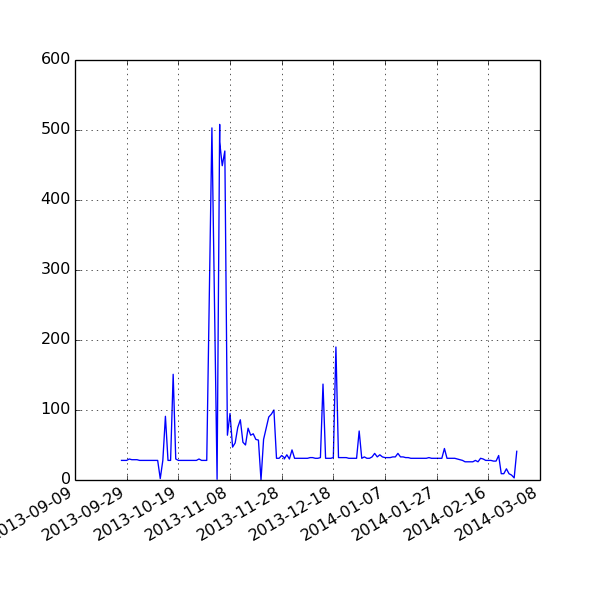

Toggle navigation
IATI Dashboard
Headlines
Data Quality
Exploring Data
Github
Download Errors
XML Errors
Validation
Versions
Licenses
Organisation XML
Download Errors
41
Files that fail to download

This table as JSON
Publisher
Registry Dataset
URL
Error Code
irc_uk
irc_uk-df080
1392217832.38.xml
8
maec
maec-2010_ar
output_ARGENTINA.xml
4
maec
maec-2010_bi
output_BURUNDI.xml
4
maec
maec-2010_cd
output_CONGO,%20REP%20DEM.xml
4
maec
maec-2010_cr
output_COSTA%20RICA.xml
4
maec
maec-2010_gn
output_GUINEA.xml
4
maec
maec-2010_id
output_INDONESIA.xml
4
maec
maec-2010_lb
output_LIBANO.xml
4
maec
maec-2010_mz
output_MOZAMBIQUE.xml
4
maec
maec-2010_oceania
output_OCEANIA,%20NO%20ESPECIFICADOS.xml
4
maec
maec-2010_ps
output_PALESTINOS,%20TERRITORIOS.xml
4
maec
maec-2010_sv
output_EL%20SALVADOR.xml
4
maec
maec-2010_td
output_CHAD.xml
4
maec
maec-2010_th
output_TAILANDIA.xml
4
maec
maec-2010_uy
output_URUGUAY.xml
4
maec
maec-2010_ws
output_SAMOA.xml
4
maec
maec-2011_89
MAEC_IATI_2011_EUROPA.XML
4
maec
maec-2011_bd
MAEC_IATI_2011_BANGLADESH.XML
4
maec
maec-2011_cv
MAEC_IATI_2011_CABO VERDE.XML
4
maec
maec-2011_ke
MAEC_IATI_2011_KENIA.XML
4
maec
maec-2011_mm
MAEC_IATI_2011_MYANMAR.XML
4
maec
maec-2011_ng
MAEC_IATI_2011_NIGERIA.XML
4
maec
maec-2011_ph
MAEC_IATI_2011_FILIPINAS.XML
4
maec
maec-2011_sn
MAEC_IATI_2011_SENEGAL.XML
4
maec
maec-2011_st
MAEC_IATI_2011_SANTO TOME Y PRINCIPE.XML
4
maec
maec-2011_uz
MAEC_IATI_2011_UZBEKISTAN.XML
4
maec
maec-2012_619
MAEC_IATI_2012_ASIA-CENTRAL.XML
4
maec
maec-2012_798
MAEC_IATI_2012_ASIA.XML
4
maec
maec-2012_al
MAEC_IATI_2012_ALBANIA.XML
4
maec
maec-2012_ao
MAEC_IATI_2012_ANGOLA.XML
4
maec
maec-2012_cl
MAEC_IATI_2012_CHILE.XML
4
maec
maec-2012_dj
MAEC_IATI_2012_YIBUTI.XML
4
maec
maec-2012_et
MAEC_IATI_2012_ETIOPIA.XML
4
maec
maec-2012_gm
MAEC_IATI_2012_GAMBIA.XML
4
maec
maec-2012_gq
MAEC_IATI_2012_GUINEA-ECUATORIAL.XML
4
maec
maec-2012_gt
MAEC_IATI_2012_GUATEMALA.XML
4
maec
maec-2012_id
MAEC_IATI_2012_INDONESIA.XML
4
maec
maec-2012_jm
MAEC_IATI_2012_JAMAICA.XML
4
maec
maec-2012_md
MAEC_IATI_2012_MOLDAVIA.XML
4
maec
maec-2012_na
MAEC_IATI_2012_NAMIBIA.XML
4
maec
maec-2012_pa
MAEC_IATI_2012_PANAMA.XML
4